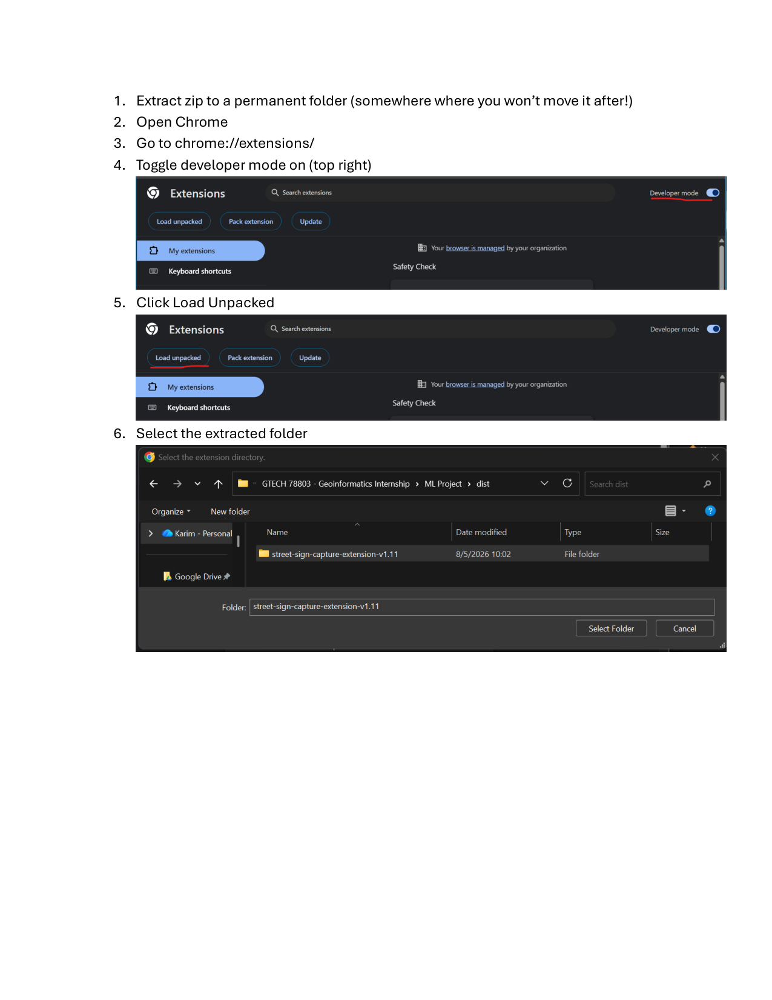
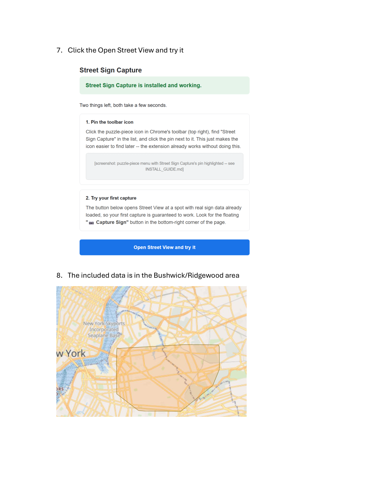
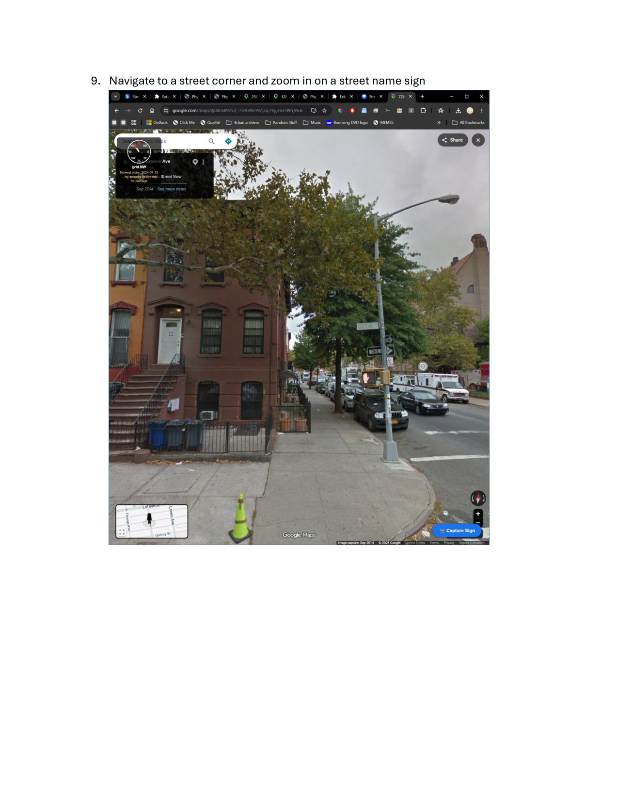
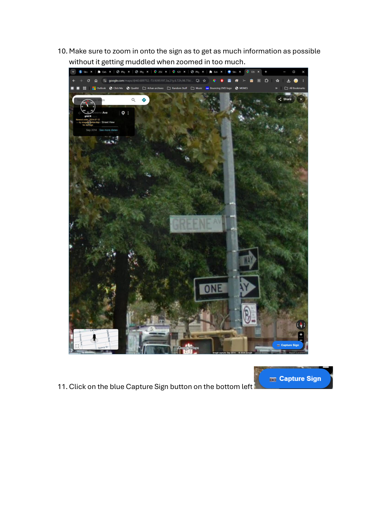
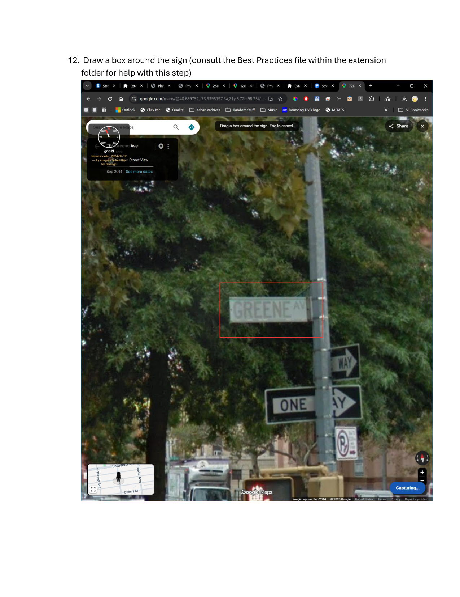
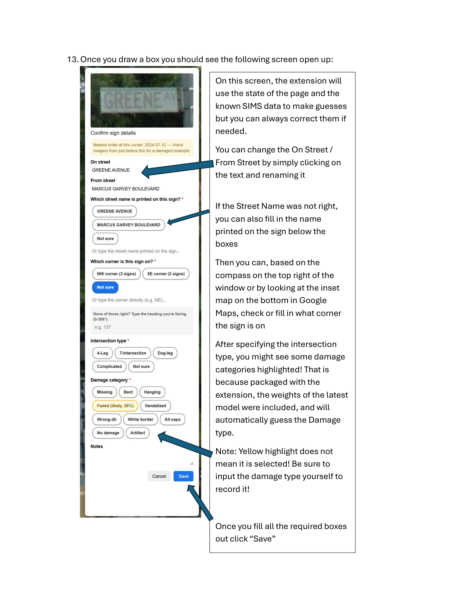
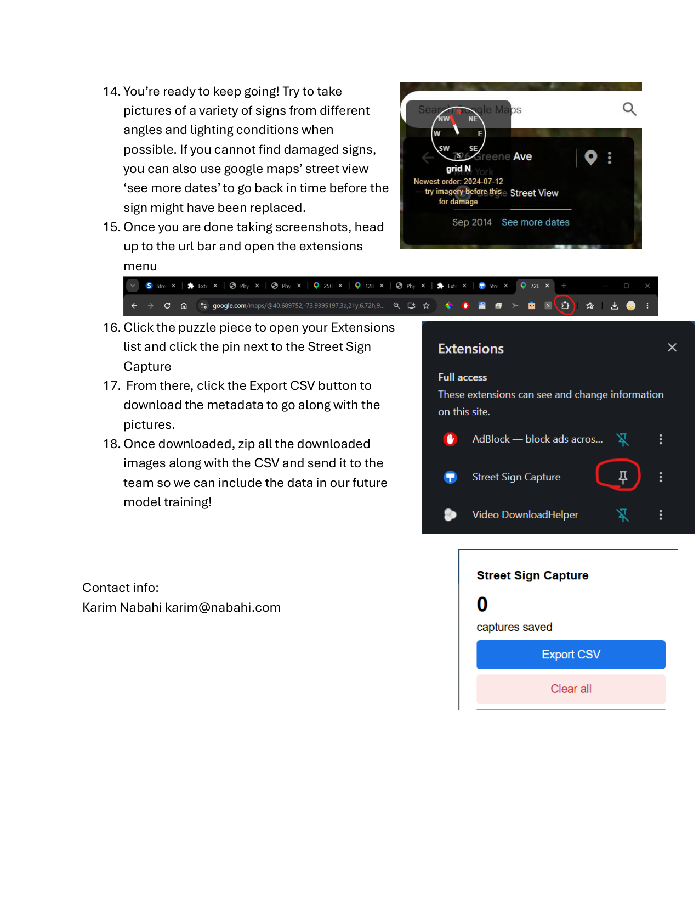

Step-by-step install and first capture, with real screenshots from the actual tool.







Shoot at a natural drive-by angle, whatever Street View gives you by default, not a posed perpendicular shot. Training images should look like what the model will actually see at inference time. Grab two different headings per sign when you have time -- it helps the model generalize instead of overfitting to one viewing angle.
Exception, bent signs: shoot slightly oblique, not straight-on. A straight-on shot flattens perspective and can hide a warped or creased panel entirely. The deformation shows up as a break in what should be a straight edge line, and that only reads clearly at an angle.
Close enough that damage detail is actually legible, err toward too-zoomed over too-wide. One sign (or a tight related pair at a corner) per shot, not a whole intersection.
Default: tight crop, sign plus its mount, minimal background.
Exceptions:
Confirmed categories (see the root README.md for reference photos): missing, bent/damaged, old design (white border and/or all-caps), faded, hanging, vandalized, wrong-direction ("red flagged"), incomplete intersection.
The root README and data/annotations.csv treat "old design" as a single combined category (white border and all-caps together). This tool instead labels them as two independent categories, white-border and all-caps, on purpose, and this matters for whoever trains a YOLO model on this data, not just for capture:
All-caps and white-border are two separate, unambiguous visual features. A labeler can say yes/no to each with high agreement. Lumping them into one "old design" category forces the model to learn a single decision boundary over signs that might have just one feature, just the other, or both, which is exactly the kind of within-class variance that produces a noisier, less precise classifier. Two clean binary labels generally train better than one composite label whenever the underlying features don't perfectly co-occur, and in practice they don't always co-occur here.
If you need "old design" as a single category anywhere downstream (matching the README's language, a stakeholder demo, whatever), derive it as a rule after the fact: old_design = all_caps OR white_border. Keep the model's training labels split, since that's the better training signal, and compute the composite label in post-processing rather than baking it into what the model has to predict directly.
This is still an open reconciliation point with the rest of the pipeline (see QUICKSTART.md), raise it before assuming either convention is final.
Note: the capture tool currently has separate buttons for white-border and all-caps rather than one combined "old design" category, and doesn't have an incomplete-intersection button yet (it captures intersection type as a separate field instead). Reconciling the tool's categories with this list exactly is an open item, not resolved yet -- flag inconsistencies rather than silently picking one convention.
Unlike the other categories, there's no sign to photograph, so the heuristic comes from the SIMS record and intersection geometry, not from the image.
This category is about readability from the expected approach, not the sign's physical condition.
Deliberately capture some of every damage category you care about, not just whatever's easiest to find -- an imbalanced set biases the classifier. Capture some no-damage examples too, the model needs negatives, not just damage cases.
Tip: use Street View's historical imagery to find damaged examples when current imagery is mostly healthy signs. DOT tends to repair the worst offenders over time, so a corridor walked today will often skew toward "no damage" even if damage was common there in the past. Google's Street View viewer shows a small clock/calendar icon when multiple historical captures exist for a location, letting you scroll back through past years -- some of those older captures may show a sign that's since been replaced or repaired. This is genuinely useful for building out damaged-category training examples, but tag these captures clearly (a note like "historical, [approx year], condition may since be repaired") so nobody later mistakes them for a live report of current condition -- the whole point of tying captures to a SIMS order number is that DOT can act on it, and an already-fixed sign isn't actionable.
Skip frames with heavy glare, motion blur, or the sign half-occluded by a truck, pole, or tree. A technically-fine shot that's visually noisy for the wrong reason teaches the model bad signal. Prefer well-lit panoramas over dusk/night ones where available.
Verify the tool's auto-matched street names before saving -- the corner match is nearest-by-GPS, not guaranteed correct near dense intersections. Pick the specific sign/corner from the candidate list rather than leaving whatever's pre-selected by default.
About 15% of corners in at least one tested ZIP code (10001) have only historic-district-style signs, no standard green sign at all, concentrated in areas like the West Village. These may be intentionally styled differently (mixed case, different border) by design, not damaged. Whether/how to apply the standard damage categories to these signs is an open question for the DOT contacts, not resolved -- don't guess at it case by case.